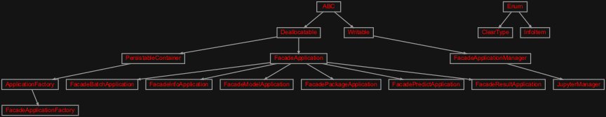
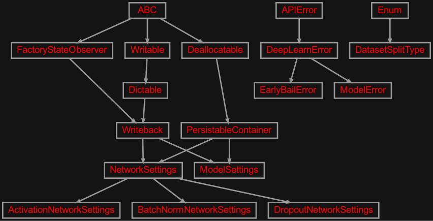
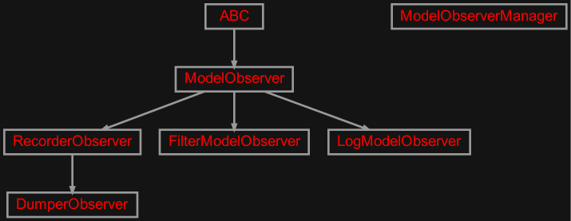
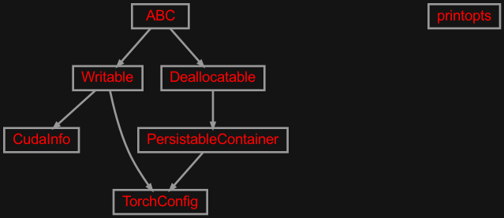

zensols.deeplearn package#
Subpackages#
- zensols.deeplearn.batch package
- Submodules
- zensols.deeplearn.batch.domain
BatchBatch.STATESBatch.__init__()Batch.attributesBatch.batch_stashBatch.data_pointsBatch.deallocate()Batch.get_label_classes()Batch.get_label_feature_vectorizer()Batch.get_labels()Batch.has_labelsBatch.idBatch.keys()Batch.size()Batch.split_nameBatch.state_nameBatch.to()Batch.torch_configBatch.write()
DataPointDefaultBatch
- zensols.deeplearn.batch.interface
- zensols.deeplearn.batch.mapping
BatchFeatureMappingBatchFeatureMapping.__init__()BatchFeatureMapping.get_attributes()BatchFeatureMapping.get_field_map_by_attribute()BatchFeatureMapping.get_field_map_by_feature_id()BatchFeatureMapping.label_attribute_nameBatchFeatureMapping.label_feature_idBatchFeatureMapping.label_vectorizer_managerBatchFeatureMapping.manager_mappingsBatchFeatureMapping.write()
ConfigBatchFeatureMappingFieldFeatureMappingManagerFeatureMapping
- zensols.deeplearn.batch.meta
- zensols.deeplearn.batch.multi
- zensols.deeplearn.batch.stash
BatchStashBatchStash._process()BatchStash.__init__()BatchStash.batch_data_point_setsBatchStash.batch_feature_mappingsBatchStash.batch_limitBatchStash.batch_metadataBatchStash.batch_sizeBatchStash.batch_typeBatchStash.clear()BatchStash.clear_all()BatchStash.create_batch()BatchStash.data_point_id_sets_pathBatchStash.data_point_typeBatchStash.deallocate()BatchStash.decoded_attributesBatchStash.load()BatchStash.model_torch_configBatchStash.populate_batch_feature_mapping()BatchStash.prime()BatchStash.split_stash_containerBatchStash.vectorizer_manager_set
- Module contents
- zensols.deeplearn.dataframe package
- Submodules
- zensols.deeplearn.dataframe.batch
- zensols.deeplearn.dataframe.util
- zensols.deeplearn.dataframe.vectorize
DataframeFeatureVectorizerManagerDataframeFeatureVectorizerManager.__init__()DataframeFeatureVectorizerManager.batch_feature_mappingDataframeFeatureVectorizerManager.column_to_feature_id()DataframeFeatureVectorizerManager.dataset_metadataDataframeFeatureVectorizerManager.exclude_columnsDataframeFeatureVectorizerManager.get_flattened_features_shape()DataframeFeatureVectorizerManager.include_columnsDataframeFeatureVectorizerManager.label_attribute_nameDataframeFeatureVectorizerManager.label_colDataframeFeatureVectorizerManager.label_shapeDataframeFeatureVectorizerManager.prefixDataframeFeatureVectorizerManager.stashDataframeFeatureVectorizerManager.write()
DataframeMetadata
- Module contents
- zensols.deeplearn.layer package
- Submodules
- zensols.deeplearn.layer.conv
ConvolutionLayerFactoryConvolutionLayerFactory.__init__()ConvolutionLayerFactory.batch_norm2d()ConvolutionLayerFactory.calcConvolutionLayerFactory.clone()ConvolutionLayerFactory.conv1d()ConvolutionLayerFactory.conv2d()ConvolutionLayerFactory.copy_calc()ConvolutionLayerFactory.depthConvolutionLayerFactory.flatten()ConvolutionLayerFactory.flatten_dimConvolutionLayerFactory.heightConvolutionLayerFactory.kernel_filterConvolutionLayerFactory.n_filtersConvolutionLayerFactory.paddingConvolutionLayerFactory.strideConvolutionLayerFactory.width
FlattenableIm2DimCalculatorMaxPool1dFactoryMaxPool2dFactoryPoolFactory
- zensols.deeplearn.layer.crf
- zensols.deeplearn.layer.linear
- zensols.deeplearn.layer.recur
RecurrentAggregationRecurrentAggregationNetworkSettingsRecurrentAggregationNetworkSettings.__init__()RecurrentAggregationNetworkSettings.aggregationRecurrentAggregationNetworkSettings.bidirectionalRecurrentAggregationNetworkSettings.get_module_class_name()RecurrentAggregationNetworkSettings.hidden_sizeRecurrentAggregationNetworkSettings.input_sizeRecurrentAggregationNetworkSettings.network_typeRecurrentAggregationNetworkSettings.num_layers
- zensols.deeplearn.layer.recurcrf
RecurrentCRFRecurrentCRFNetworkSettingsRecurrentCRFNetworkSettings.__init__()RecurrentCRFNetworkSettings.bidirectionalRecurrentCRFNetworkSettings.decoder_settingsRecurrentCRFNetworkSettings.get_module_class_name()RecurrentCRFNetworkSettings.hidden_sizeRecurrentCRFNetworkSettings.input_sizeRecurrentCRFNetworkSettings.network_typeRecurrentCRFNetworkSettings.num_labelsRecurrentCRFNetworkSettings.num_layersRecurrentCRFNetworkSettings.score_reductionRecurrentCRFNetworkSettings.to_recurrent_aggregation()
- Module contents
- zensols.deeplearn.model package
- Submodules
- zensols.deeplearn.model.analyze
- zensols.deeplearn.model.batchiter
- zensols.deeplearn.model.executor
ModelExecutorModelExecutor.ATTR_EXP_METAModelExecutor.__init__()ModelExecutor.batch_iteratorModelExecutor.batch_stashModelExecutor.configModelExecutor.config_factoryModelExecutor.criterion_optimizer_schedulerModelExecutor.dataset_split_namesModelExecutor.dataset_stashModelExecutor.deallocate()ModelExecutor.deallocate_batches()ModelExecutor.debugModelExecutor.feature_stashModelExecutor.get_model_parameter()ModelExecutor.get_network_parameter()ModelExecutor.intermediate_results_pathModelExecutor.load()ModelExecutor.modelModelExecutor.model_existsModelExecutor.model_managerModelExecutor.model_result_reportModelExecutor.model_settingsModelExecutor.nameModelExecutor.net_settingsModelExecutor.predict()ModelExecutor.progress_barModelExecutor.progress_bar_colsModelExecutor.reset()ModelExecutor.result_managerModelExecutor.result_pathModelExecutor.set_model_parameter()ModelExecutor.set_network_parameter()ModelExecutor.test()ModelExecutor.torch_configModelExecutor.train()ModelExecutor.train_managerModelExecutor.train_production()ModelExecutor.update_pathModelExecutor.write()ModelExecutor.write_model()ModelExecutor.write_settings()
- zensols.deeplearn.model.facade
ModelFacadeModelFacade.__init__()ModelFacade.batch_metadataModelFacade.batch_stashModelFacade.cache_batchesModelFacade.class_explorerModelFacade.clear()ModelFacade.configModelFacade.config_factoryModelFacade.configure_cli_logging()ModelFacade.configure_default_cli_logging()ModelFacade.configure_jupyter()ModelFacade.dataset_stashModelFacade.deallocate()ModelFacade.debug()ModelFacade.dropoutModelFacade.epochsModelFacade.executorModelFacade.executor_nameModelFacade.feature_stashModelFacade.get_described_results()ModelFacade.get_encode_sparse_matrices()ModelFacade.get_predictions()ModelFacade.get_predictions_factory()ModelFacade.get_result_analyzer()ModelFacade.get_singleton()ModelFacade.label_attribute_nameModelFacade.last_resultModelFacade.learning_rateModelFacade.load_from_path()ModelFacade.model_configModelFacade.model_settingsModelFacade.net_settingsModelFacade.persist_result()ModelFacade.plot_result()ModelFacade.predict()ModelFacade.predictions_dataframe_factory_classModelFacade.progress_barModelFacade.progress_bar_colsModelFacade.reload()ModelFacade.remove_metadata_mapping_field()ModelFacade.result_managerModelFacade.set_encode_sparse_matrices()ModelFacade.stop_training()ModelFacade.test()ModelFacade.train()ModelFacade.train_production()ModelFacade.vectorizer_manager_setModelFacade.write()ModelFacade.write_predictions()ModelFacade.write_result()ModelFacade.writer
- zensols.deeplearn.model.format
LatexPerformanceMetricsDumperPerformanceMetricsDumperPerformanceMetricsDumper.__init__()PerformanceMetricsDumper.by_label_columnsPerformanceMetricsDumper.by_label_dataframePerformanceMetricsDumper.capitalize()PerformanceMetricsDumper.facadePerformanceMetricsDumper.format_thousand()PerformanceMetricsDumper.majority_label_res_idPerformanceMetricsDumper.name_replacePerformanceMetricsDumper.precisionPerformanceMetricsDumper.sort_columnPerformanceMetricsDumper.summary_columnsPerformanceMetricsDumper.summary_dataframePerformanceMetricsDumper.write()
- zensols.deeplearn.model.manager
- zensols.deeplearn.model.meta
- zensols.deeplearn.model.module
- zensols.deeplearn.model.optimizer
- zensols.deeplearn.model.pack
ModelPackerModelUnpackerModelUnpacker.__init__()ModelUnpacker.config_factoryModelUnpacker.facadeModelUnpacker.facade_sourceModelUnpacker.install_model()ModelUnpacker.installed_model_pathModelUnpacker.installed_versionModelUnpacker.installerModelUnpacker.model_config_overwritesModelUnpacker.model_packer_nameModelUnpacker.write()
SubsetConfig
- zensols.deeplearn.model.pred
- zensols.deeplearn.model.sequence
- zensols.deeplearn.model.trainmng
- zensols.deeplearn.model.wgtexecutor
WeightedModelExecutorWeightedModelExecutor.__init__()WeightedModelExecutor.clear()WeightedModelExecutor.get_class_weights()WeightedModelExecutor.get_label_counts()WeightedModelExecutor.get_label_statistics()WeightedModelExecutor.use_weighted_criterionWeightedModelExecutor.weighted_split_nameWeightedModelExecutor.weighted_split_path
- Module contents
- zensols.deeplearn.result package
- Submodules
- zensols.deeplearn.result.compare
- zensols.deeplearn.result.domain
ClassificationMetricsDatasetResultEpochResultEpochResult.__init__()EpochResult.batch_idsEpochResult.batch_labelsEpochResult.batch_lossesEpochResult.batch_outputsEpochResult.batch_predictionsEpochResult.clone()EpochResult.end()EpochResult.indexEpochResult.lossesEpochResult.n_data_pointsEpochResult.split_typeEpochResult.update()EpochResult.write()
MetricsModelResultModelResult.RUNSModelResult.__init__()ModelResult.clone()ModelResult.configModelResult.contains_resultsModelResult.dataset_resultModelResult.decoded_attributesModelResult.get_intermediate()ModelResult.get_num_runs()ModelResult.last_testModelResult.last_test_nameModelResult.model_settingsModelResult.nameModelResult.net_settingsModelResult.non_empty_dataset_resultModelResult.reset()ModelResult.reset_runs()ModelResult.testModelResult.trainModelResult.validationModelResult.write()ModelResult.write_result_statistics()
ModelResultErrorModelTypeNoResultErrorPredictionMetricsResultsContainerResultsContainer.FLOAT_TYPESResultsContainer.__init__()ResultsContainer.ave_lossResultsContainer.classification_metricsResultsContainer.clone()ResultsContainer.contains_resultsResultsContainer.end()ResultsContainer.is_endedResultsContainer.is_startedResultsContainer.labelsResultsContainer.max_lossResultsContainer.metricsResultsContainer.min_lossResultsContainer.model_typeResultsContainer.n_iterationsResultsContainer.n_outcomesResultsContainer.prediction_metricsResultsContainer.predictionsResultsContainer.start()
ScoreMetrics
- zensols.deeplearn.result.hypsig
AnovaSignificanceTestChiSquareEvaluationChiSquareEvaluation.__init__()ChiSquareEvaluation.adjusted_residualsChiSquareEvaluation.associatedChiSquareEvaluation.contingency_tableChiSquareEvaluation.contribsChiSquareEvaluation.dofChiSquareEvaluation.expectedChiSquareEvaluation.pearson_residualsChiSquareEvaluation.raw_residualsChiSquareEvaluation.write()ChiSquareEvaluation.write_associated()
ChiSquareSignificanceTestEvaluationMcNemarSignificanceTestSignificanceErrorSignificanceTestSignificanceTestDataSignificanceTestData.__init__()SignificanceTestData.aSignificanceTestData.alphaSignificanceTestData.bSignificanceTestData.contingency_tableSignificanceTestData.correct_tableSignificanceTestData.gold_colSignificanceTestData.id_colSignificanceTestData.null_hypothesisSignificanceTestData.pred_col
SignificanceTestSuiteStudentTTestSignificanceTestWilcoxSignificanceTest
- zensols.deeplearn.result.manager
ArchivedResultModelResultManagerModelResultManager.__init__()ModelResultManager.create_results_stash()ModelResultManager.dump()ModelResultManager.file_patternModelResultManager.file_regexModelResultManager.get_grapher()ModelResultManager.get_last_id()ModelResultManager.get_next_graph_path()ModelResultManager.get_next_json_path()ModelResultManager.get_next_model_path()ModelResultManager.get_next_text_path()ModelResultManager.model_pathModelResultManager.nameModelResultManager.parse_file_name()ModelResultManager.results_stashModelResultManager.save_jsonModelResultManager.save_json_result()ModelResultManager.save_plotModelResultManager.save_plot_result()ModelResultManager.save_textModelResultManager.save_text_result()ModelResultManager.to_file_name()
- zensols.deeplearn.result.plot
- zensols.deeplearn.result.pred
PredictionsDataFrameFactoryPredictionsDataFrameFactory.CORRECT_COLPredictionsDataFrameFactory.ID_COLPredictionsDataFrameFactory.LABEL_COLPredictionsDataFrameFactory.METRICS_DF_COLUMNSPredictionsDataFrameFactory.METRICS_DF_MACRO_COLUMNSPredictionsDataFrameFactory.METRICS_DF_MICRO_COLUMNSPredictionsDataFrameFactory.METRICS_DF_WEIGHTED_COLUMNSPredictionsDataFrameFactory.METRIC_DESCRIPTIONSPredictionsDataFrameFactory.PREDICTION_COLPredictionsDataFrameFactory.__init__()PredictionsDataFrameFactory.batch_limitPredictionsDataFrameFactory.column_namesPredictionsDataFrameFactory.data_point_transformPredictionsDataFrameFactory.dataframePredictionsDataFrameFactory.epoch_resultPredictionsDataFrameFactory.label_vectorizer_namePredictionsDataFrameFactory.majority_label_metricsPredictionsDataFrameFactory.metrics_dataframePredictionsDataFrameFactory.metrics_dataframe_describerPredictionsDataFrameFactory.metrics_to_series()PredictionsDataFrameFactory.namePredictionsDataFrameFactory.resultPredictionsDataFrameFactory.sourcePredictionsDataFrameFactory.stash
SequencePredictionsDataFrameFactory
- zensols.deeplearn.result.report
- Module contents
- zensols.deeplearn.vectorize package
- Submodules
- zensols.deeplearn.vectorize.domain
- zensols.deeplearn.vectorize.manager
EncodableFeatureVectorizerFeatureVectorizerManagerFeatureVectorizerManager.ATTR_EXP_METAFeatureVectorizerManager.MANAGER_SEPFeatureVectorizerManager.__init__()FeatureVectorizerManager.configured_vectorizersFeatureVectorizerManager.deallocate()FeatureVectorizerManager.feature_idsFeatureVectorizerManager.get()FeatureVectorizerManager.items()FeatureVectorizerManager.keys()FeatureVectorizerManager.torch_configFeatureVectorizerManager.transform()FeatureVectorizerManager.values()FeatureVectorizerManager.write()
FeatureVectorizerManagerSetFeatureVectorizerManagerSet.ATTR_EXP_METAFeatureVectorizerManagerSet.__init__()FeatureVectorizerManagerSet.deallocate()FeatureVectorizerManagerSet.feature_idsFeatureVectorizerManagerSet.get()FeatureVectorizerManagerSet.get_vectorizer()FeatureVectorizerManagerSet.get_vectorizer_names()FeatureVectorizerManagerSet.keys()FeatureVectorizerManagerSet.namesFeatureVectorizerManagerSet.values()FeatureVectorizerManagerSet.write()
TransformableFeatureVectorizer
- zensols.deeplearn.vectorize.util
- zensols.deeplearn.vectorize.vectorizers
AggregateEncodableFeatureVectorizerAggregateEncodableFeatureVectorizer.DEFAULT_PAD_LABELAggregateEncodableFeatureVectorizer.DESCRIPTIONAggregateEncodableFeatureVectorizer.__init__()AggregateEncodableFeatureVectorizer.create_padded_tensor()AggregateEncodableFeatureVectorizer.delegateAggregateEncodableFeatureVectorizer.delegate_feature_idAggregateEncodableFeatureVectorizer.pad_labelAggregateEncodableFeatureVectorizer.size
AttributeEncodableFeatureVectorizerCategoryEncodableFeatureVectorizerIdentityEncodableFeatureVectorizerMaskFeatureContextMaskFeatureVectorizerNominalEncodedEncodableFeatureVectorizerOneHotEncodedEncodableFeatureVectorizerSeriesEncodableFeatureVectorizer
- Module contents
Submodules#
zensols.deeplearn.cli#

Command line entry point to the application using the application CLI.
- class zensols.deeplearn.cli.ClearType(value, names=None, *, module=None, qualname=None, type=None, start=1, boundary=None)[source]#
Bases:
EnumIndicates what type of data to delete (clear).
- batch = 2#
- none = 1#
- source = 3#
- class zensols.deeplearn.cli.FacadeApplication(config, facade_name='facade', model_path=None, config_factory_args=<factory>, config_overwrites=None, cache_global_facade=True, model_config_overwrites=None)[source]#
Bases:
DeallocatableBase class for applications that use
ModelFacade.- CLI_META = {'mnemonic_excludes': {'clear_cached_facade', 'create_facade', 'deallocate', 'get_cached_facade'}, 'option_overrides': {'model_path': {'long_name': 'model', 'short_name': None}}}#
Tell the command line app API to igonore subclass and client specific use case methods.
- __init__(config, facade_name='facade', model_path=None, config_factory_args=<factory>, config_overwrites=None, cache_global_facade=True, model_config_overwrites=None)#
-
cache_global_facade:
bool= True# Whether to globally cache the facade returned by
get_cached_facade().
-
config:
Configurable# The config used to create facade instances.
-
config_factory_args:
Dict[str,Any]# The arguments given to the
ImportConfigFactory, which could be useful for reloading all classes while debugingg.
-
config_overwrites:
Configurable= None# A configurable that clobbers any configuration in
configfor those sections/options set.
- get_cached_facade(**kwargs) ModelFacade#
Return a created facade that is cached in this application instance.
- Return type:
-
model_config_overwrites:
Configurable= None# Configuration that is injected into the model loaded by the
model.ModelManager.
- class zensols.deeplearn.cli.FacadeApplicationFactory(package_resource, app_config_resource='resources/app.conf', children_configs=None, reload_factory=False, reload_pattern=None, error_handler=None)[source]#
Bases:
ApplicationFactoryThis is a utility class that creates instances of
FacadeApplication. It’s only needed if you need to create a facade without wanting invoke the command line attached to the applications.It does this by only invoking the first pass applications so all the correct initialization happens before returning factory artifacts.
There mst be a
FacadeApplication.facade_nameentry in the configuration tied to an instance ofFacadeApplication.- See:
- __init__(package_resource, app_config_resource='resources/app.conf', children_configs=None, reload_factory=False, reload_pattern=None, error_handler=None)#
- class zensols.deeplearn.cli.FacadeApplicationManager(cli_harness, cli_args_fn=<function FacadeApplicationManager.<lambda>>, reset_torch=True, allocation_tracking=False, logger_name='notebook', default_logging_level='WARNING', progress_bar_cols=120, config_overwrites=<factory>)[source]#
Bases:
WritableA very high level client interface making it easy to configure and run models from an interactive environment such as a Python REPL or a Jupyter notebook (see
JupyterManager)- __init__(cli_harness, cli_args_fn=<function FacadeApplicationManager.<lambda>>, reset_torch=True, allocation_tracking=False, logger_name='notebook', default_logging_level='WARNING', progress_bar_cols=120, config_overwrites=<factory>)#
-
allocation_tracking:
Union[bool,str] = False# Whether or not to track resource/memory leaks. If set to
stack, the stack traces of the unallocated objects will be printed. If set tocountsonly the counts will be printed. If set toTrueonly the unallocated objects without the stack will be printed.
- cleanup(include_cuda=True, quiet=False)[source]#
Report memory leaks, run the Python garbage collector and optionally empty the CUDA cache.
- Parameters:
include_cuda (
bool) – ifTrueclear the GPU cachequiet (
bool) – do not report unallocated objects, regardless of the setting ofallocation_tracking
- cli_args_fn()#
Creates the arguments used to create the facade from the application factory.
-
cli_harness:
CliHarness# The CLI harness used to create the facade application.
- config(section, **kwargs)[source]#
Add overwriting configuration used when creating the facade.
- Parameters:
section (
str) – the section to be overwritten (or added)kwargs – the key/value pairs used as the section data to overwrite
- See:
-
config_overwrites:
Dict[str,Dict[str,str]]# Clobbers any configuration set by
config()for those sections/options set.
- create_facade(*args, **kwargs)[source]#
Create and return a facade. This deallocates and cleans up state from any previous facade creation as a side effect.
- Parameters:
args – given to the
cli_args_fnfunction to create arguments passed to the CLI- Return type:
-
default_logging_level:
str= 'WARNING'# If set, then initialize the logging system using this as the default
logging level. This is the upper case logging name such as
WARNING.
- property facade: ModelFacade#
The current facade for this notebook instance.
- Returns:
the existing facade, or that created by
create_facade()if it doesn’t already exist
- run(display_results=True)[source]#
Train, test and optionally show results.
- Parameters:
display_results (
bool) – ifTrue, write and plot the results
- show_leaks(output='counts', fail=True)[source]#
Show all resources/memory leaks in the current facade. First, this deallocates the facade, then prints any lingering objects using
Deallocatable.Important:
allocation_trackingmust be set toTruefor this to work.
- write(depth=0, writer=<_io.TextIOWrapper name='<stdout>' mode='w' encoding='utf-8'>, include_model=False, include_metadata=False, include_settings=False, **kwargs)[source]#
Write the contents of this instance to
writerusing indentiondepth.- Parameters:
depth (
int) – the starting indentation depthwriter (
TextIOBase) – the writer to dump the content of this writable
- class zensols.deeplearn.cli.FacadeBatchApplication(config, facade_name='facade', model_path=None, config_factory_args=<factory>, config_overwrites=None, cache_global_facade=True, model_config_overwrites=None)[source]#
Bases:
FacadeApplicationTest, train and validate models.
- CLI_META = {'mnemonic_excludes': {'clear_cached_facade', 'create_facade', 'deallocate', 'get_cached_facade'}, 'mnemonic_overrides': {'batch': {'option_includes': {'clear_type', 'limit', 'split'}}}, 'option_overrides': {'clear': {'short_name': None}, 'clear_type': {'long_name': 'ctype', 'short_name': None}, 'limit': {'short_name': None}, 'model_path': {'long_name': 'model', 'short_name': None}, 'split': {'short_name': None}}}#
Tell the command line app API to igonore subclass and client specific use case methods.
- __init__(config, facade_name='facade', model_path=None, config_factory_args=<factory>, config_overwrites=None, cache_global_facade=True, model_config_overwrites=None)#
- class zensols.deeplearn.cli.FacadeInfoApplication(config, facade_name='facade', model_path=None, config_factory_args=<factory>, config_overwrites=None, cache_global_facade=True, model_config_overwrites=None, feature_stash_name='feature_stash')[source]#
Bases:
FacadeApplicationContains methods that provide information about the model via the facade.
- CLI_META = {'mnemonic_excludes': {'clear_cached_facade', 'create_facade', 'deallocate', 'get_cached_facade'}, 'mnemonic_overrides': {'print_information': 'info'}, 'option_excludes': {'feature_stash_name'}, 'option_overrides': {'debug_value': {'long_name': 'execlevel', 'short_name': None}, 'info_item': {'long_name': 'item', 'short_name': 'i'}, 'model_path': {'long_name': 'model', 'short_name': None}}}#
Tell the command line app API to igonore subclass and client specific use case methods.
- __init__(config, facade_name='facade', model_path=None, config_factory_args=<factory>, config_overwrites=None, cache_global_facade=True, model_config_overwrites=None, feature_stash_name='feature_stash')#
- debug(debug_value=None)[source]#
Debug the model.
- Parameters:
debug_value (
int) – the executor debugging level
-
feature_stash_name:
str= 'feature_stash'# The section name of the stash to write for
InfoItem.feature.
- class zensols.deeplearn.cli.FacadeModelApplication(config, facade_name='facade', model_path=None, config_factory_args=<factory>, config_overwrites=None, cache_global_facade=True, model_config_overwrites=None, use_progress_bar=False)[source]#
Bases:
FacadeApplicationTest, train and validate models.
- CLI_META = {'mnemonic_excludes': {'clear_cached_facade', 'create_facade', 'deallocate', 'get_cached_facade'}, 'mnemonic_overrides': {'early_stop': {'name': 'stop', 'option_includes': {}}, 'train_production': 'trainprod'}, 'option_overrides': {'model_path': {'long_name': 'model', 'short_name': None}, 'use_progress_bar': {'long_name': 'progress', 'short_name': 'p'}}}#
Tell the command line app API to igonore subclass and client specific use case methods.
- __init__(config, facade_name='facade', model_path=None, config_factory_args=<factory>, config_overwrites=None, cache_global_facade=True, model_config_overwrites=None, use_progress_bar=False)#
- test(model_path=None)[source]#
Test an existing model the model and dump the results of the test.
- Parameters:
model_path (
Path) – the path to the model or use the last trained model if not provided
- train()[source]#
Train the model and dump the results, including a graph of the train/validation loss.
- class zensols.deeplearn.cli.FacadePackageApplication(config, facade_name='facade', model_path=None, config_factory_args=<factory>, config_overwrites=None, cache_global_facade=True, model_config_overwrites=None, packer=None)[source]#
Bases:
FacadeApplicationContains methods that package models.
- CLI_META = {'mnemonic_excludes': {'clear_cached_facade', 'create_facade', 'deallocate', 'get_cached_facade'}, 'mnemonic_overrides': {'pack_model': 'pack'}, 'option_excludes': {'packer'}, 'option_overrides': {'model_path': {'long_name': 'model', 'short_name': None}, 'output_model_dir': {'long_name': 'modeldir'}}}#
Tell the command line app API to igonore subclass and client specific use case methods.
- __init__(config, facade_name='facade', model_path=None, config_factory_args=<factory>, config_overwrites=None, cache_global_facade=True, model_config_overwrites=None, packer=None)#
-
packer:
ModelPacker= None# The model packer used to create the model distributions from this app.
- class zensols.deeplearn.cli.FacadePredictApplication(config, facade_name='facade', model_path=None, config_factory_args=<factory>, config_overwrites=None, cache_global_facade=True, model_config_overwrites=None)[source]#
Bases:
FacadeApplicationAn applicaiton that provides prediction funtionality.
- class zensols.deeplearn.cli.FacadeResultApplication(config, facade_name='facade', model_path=None, config_factory_args=<factory>, config_overwrites=None, cache_global_facade=True, model_config_overwrites=None)[source]#
Bases:
FacadeApplicationContains methods that dump previous results.
- CLI_META = {'mnemonic_excludes': {'clear_cached_facade', 'create_facade', 'deallocate', 'get_cached_facade'}, 'mnemonic_overrides': {'compare_results': 'cmpres', 'majority_label_metrics': 'majlab', 'metrics': 'results', 'result_ids': 'resids', 'result_summary': 'summary'}, 'option_overrides': {'describe': {'short_name': None}, 'include_validation': {'long_name': 'validation', 'short_name': None}, 'model_path': {'long_name': 'model', 'short_name': None}, 'out_file': {'long_name': 'outfile', 'short_name': 'o'}}}#
Tell the command line app API to igonore subclass and client specific use case methods.
- __init__(config, facade_name='facade', model_path=None, config_factory_args=<factory>, config_overwrites=None, cache_global_facade=True, model_config_overwrites=None)#
- majority_label_metrics(res_id=None)[source]#
Show majority label metrics of the test dataset using a previous result set.
- Parameters:
res_id (
str) – the result ID or use the last if not given
- metrics(sort='wF1', res_id=None, out_file=None, describe=False)[source]#
Write a spreadhseet of label performance metrics for a previously trained and tested model.
- class zensols.deeplearn.cli.InfoItem(value, names=None, *, module=None, qualname=None, type=None, start=1, boundary=None)[source]#
Bases:
EnumIndicates what information to dump in
FacadeInfoApplication.print_information().- batch = 6#
- config = 4#
- feature = 5#
- meta = 1#
- model = 3#
- param = 2#
- class zensols.deeplearn.cli.JupyterManager(cli_harness, cli_args_fn=<function FacadeApplicationManager.<lambda>>, reset_torch=True, allocation_tracking=False, logger_name='notebook', default_logging_level='WARNING', progress_bar_cols=120, config_overwrites=<factory>, reduce_logging=False, browser_width=95)[source]#
Bases:
FacadeApplicationManagerA facade application manager that provides additional convenience functionality.
- __init__(cli_harness, cli_args_fn=<function FacadeApplicationManager.<lambda>>, reset_torch=True, allocation_tracking=False, logger_name='notebook', default_logging_level='WARNING', progress_bar_cols=120, config_overwrites=<factory>, reduce_logging=False, browser_width=95)#
- create_facade(*args, **kwargs)[source]#
Create and return a facade. This deallocates and cleans up state from any previous facade creation as a side effect.
- Parameters:
args – given to the
cli_args_fnfunction to create arguments passed to the CLI- Return type:
zensols.deeplearn.domain#

This file contains classes that configure the network and classifier runs.
- class zensols.deeplearn.domain.ActivationNetworkSettings(name, config_factory, activation)[source]#
Bases:
NetworkSettingsA network settings that contains a activation setting and creates a activation layer.
- __init__(name, config_factory, activation)#
- class zensols.deeplearn.domain.BatchNormNetworkSettings(name, config_factory, batch_norm_d, batch_norm_features)[source]#
Bases:
NetworkSettingsA network settings that contains a batchnorm setting and creates a batchnorm layer.
- __init__(name, config_factory, batch_norm_d, batch_norm_features)#
-
batch_norm_d:
int# The dimension of the batch norm or
Noneto disable. Based on this one of the following is used as a layer:
- property batch_norm_layer#
- class zensols.deeplearn.domain.DatasetSplitType(value, names=None, *, module=None, qualname=None, type=None, start=1, boundary=None)[source]#
Bases:
EnumIndicates an action on the model, which is first trained, validated, then tested.
Implementation note: for now
testis used for both testing the model and ad-hoc prediction- test = 3#
- train = 1#
- validation = 2#
- exception zensols.deeplearn.domain.DeepLearnError[source]#
Bases:
APIErrorRaised for any frame originated error.
- __annotations__ = {}#
- __module__ = 'zensols.deeplearn.domain'#
- class zensols.deeplearn.domain.DropoutNetworkSettings(name, config_factory, dropout)[source]#
Bases:
NetworkSettingsA network settings that contains a dropout setting and creates a dropout layer.
- __init__(name, config_factory, dropout)#
- property dropout_layer#
- exception zensols.deeplearn.domain.EarlyBailError[source]#
Bases:
DeepLearnErrorConvenience used for helping debug the network.
- __annotations__ = {}#
- __module__ = 'zensols.deeplearn.domain'#
- exception zensols.deeplearn.domain.ModelError[source]#
Bases:
DeepLearnErrorRaised for any model related error.
- __annotations__ = {}#
- __module__ = 'zensols.deeplearn.domain'#
- class zensols.deeplearn.domain.ModelSettings(name, config_factory, model_name, path, learning_rate, epochs, append_model_path=None, max_consecutive_increased_count=9223372036854775807, nominal_labels=True, batch_iteration_class_name=None, criterion_class_name=None, optimizer_class_name=None, optimizer_params=None, clip_gradient_threshold=None, scale_gradient_params=None, scheduler_class_name=None, scheduler_params=None, reduce_outcomes='argmax', shuffle_training=False, batch_limit=9223372036854775807, batch_iteration='cpu', prediction_mapper_name=None, cache_batches=True, gc_level=0, observer_manager=<factory>, store_model_result='test', store_report=True)[source]#
Bases:
Writeback,PersistableContainerThis configures and instance of
ModelExecutor. This differes fromNetworkSettingsin that it configures the model parameters, and not the neural network parameters.Another reason for these two separate classes is data in this class is not needed to rehydrate an instance of
torch.nn.Module.The loss function strategy across parameters
nominal_labels,criterion_classandoptimizer_class, must be consistent. The defaults uses nominal labels, which means a single integer, rather than one hot encoding, is used for the labels. Most loss function, including the defaulttorch.nn.CrossEntropyLoss`uses nominal labels. The optimizer defaults totorch.optim.Adam.However, if
nominal_labelsis set toFalse, it is expected that the label output is aLongone hot encoding of the class label that must be decoded withBatchIterator._decode_outcomes()and uses a loss function such astorch.nn.BCEWithLogitsLoss, which applies a softmax over the output to narow to a nominal.If the
criterion_classis left as the default, the class the corresponding class across these two is selected based onnominal_labels.Note: Instances of this class are pickled as parts of the results in
zensols.deeplearn.result.domain.ModelResult, so they must be able to serialize. However, they are not used to restore the executor or model, which are instead, recreated from the configuration for each (re)load (see the package documentation for more information).- See:
- __init__(name, config_factory, model_name, path, learning_rate, epochs, append_model_path=None, max_consecutive_increased_count=9223372036854775807, nominal_labels=True, batch_iteration_class_name=None, criterion_class_name=None, optimizer_class_name=None, optimizer_params=None, clip_gradient_threshold=None, scale_gradient_params=None, scheduler_class_name=None, scheduler_params=None, reduce_outcomes='argmax', shuffle_training=False, batch_limit=9223372036854775807, batch_iteration='cpu', prediction_mapper_name=None, cache_batches=True, gc_level=0, observer_manager=<factory>, store_model_result='test', store_report=True)#
-
append_model_path:
str= None# Whether and how to append the model’s name to the end of
path. If this value isverbatim, append the model name as provided withmodel_name, ifnormalizeusenormalize_name()to normalize it, and ifNonedo not append anything.
-
batch_iteration:
str= 'cpu'# How the batches are buffered, which is one of:
gpu, buffers all data in the GPUcpu, which means keep all batches in CPU memory (the default)bufferedwhich means to buffer only one batch at a time (only for very large data).
-
batch_iteration_class_name:
InitVar= None# A string fully qualified class name of type
BatchIterator. This must be set to a class such asScoredBatchIteratorto handle descrete states in the output layer such as terminating CRF states. The default isBatchIterator, which expects continuous output layers.
-
batch_limit:
Union[int,float] = 9223372036854775807# The max number of batches to train, validate and test on, which is useful for limiting while debuging; defaults to sys.maxsize. If this value is a float, it is assumed to be a number between [0, 1] and the number of batches is multiplied by the value.
-
clip_gradient_threshold:
float= None# Parameters passed to
torch.nn.utils.clip_grad_value_()to clip gradients above this threshold.
-
criterion_class_name:
InitVar= None# The loss function class name (see class doc).
-
gc_level:
int= 0# The frequency by with the garbage collector is invoked. The higher the value, the more often it will be run during training, testing and validation.
-
max_consecutive_increased_count:
int= 9223372036854775807# The maximum number of times the validation loss can increase per epoch before the executor “gives up” and early stops training.
-
nominal_labels:
bool= True# Trueif using numbers to identify the class as an enumeration rather than a one hot encoded array.
- property normal_model_name: str#
Return the normalized
model_nameusingnormalize_name().
- static normalize_name(name)[source]#
Normalize the name in to a string that is more file system friendly. This is used for the
model_nameby API components that write data to the file system about the model this class configures such asModelResultManager.- Return type:
- Returns:
the normalized name
-
observer_manager:
ModelObserverManager# The model observer used by the entire train, test, validation process.
-
optimizer_class_name:
InitVar= None# The optimization algorithm class name (see class doc).
-
optimizer_params:
Dict[str,Any] = None# The parameters given as
**kwargswhen creating the optimizer. Do not add the learning rate, instead seelearning_rate.
-
prediction_mapper_name:
str= None# Creates data points from a client for the purposes of prediction. This value is the string class name of an instance of
PredictionMapperused to create predictions. While optional, if not set, ad-hoc predictions (i.e. from the command line) can not be created.Instances of
PredictionMapperare created and managed in theModelFacade.
-
reduce_outcomes:
str= 'argmax'# The method by which the labels and output is reduced. The output is optionally reduced, which is one of the following:
argmax: uses the index of the largest value, which is used for classification models and the defaultsoftmax: just likeargmaxbut applies a softmaxnone: return the identity.
-
scale_gradient_params:
Dict[str,Union[float,bool]] = None# Parameters passed to
torch.nn.utils.clip_grad_norm_()to scale the gradient norm.
-
scheduler_class_name:
str= None# The fully qualified class name of the learning rate scheduler used for the optimizer (if not
None) such as:- See:
-
scheduler_params:
Dict[str,Any] = None# The parameters given as
**kwargswhen creating the scheduler (if any).- See:
-
shuffle_training:
bool= False# If
Trueshuffle the training data set split before the training process starts. The shuffling only happens once for all epocs.
-
store_model_result:
str= 'test'# Whether to store the
result.domain.ModelResultinstance in the state file, which is one of:test: only tested models, as apposed to usingtrain_production()always: always save results, even in production modelsnever: there will be no training or validation results in output
The results are also stored as
.datfiles in the results directory.- See:
- class zensols.deeplearn.domain.NetworkSettings(name, config_factory)[source]#
Bases:
Writeback,PersistableContainerA container settings class for network models. This abstract class must return the fully qualified (with module name) PyTorch model (`torch.nn.Module`) that goes along with these settings. An instance of this class is saved in the model file and given back to it when later restored.
Note: Instances of this class are pickled as parts of the results in
zensols.deeplearn.result.domain.ModelResult, so they must be able to serialize. However, they are not used to restore the executor or model, which are instead, recreated from the configuration for each (re)load (see the package documentation for more information).- See:
- __init__(name, config_factory)#
-
config_factory:
ConfigFactory# The configuration factory used to create the module.
- abstract get_module_class_name()[source]#
Returns the fully qualified class name of the module to create by
ModelManager. This module takes as the first parameter an instance of this class.Important: This method is not used for nested modules. You must declare specific class names in the configuration for those nested class naems.
- Return type:
zensols.deeplearn.observer#

Contains a simple but effective observer pattern set of classes for training, testing and validating models.
- class zensols.deeplearn.observer.DumperObserver(events=<factory>, flatten=True, flatten_short_classes=True, output_file=PosixPath('dumper-observer.csv'), file_mode='append', trigger_events=<factory>, trigger_callers=None, mkdir=True, add_columns=None)[source]#
Bases:
RecorderObserverA class that dumps all data when certain events are received as a CSV to the file sytsem.
- __init__(events=<factory>, flatten=True, flatten_short_classes=True, output_file=PosixPath('dumper-observer.csv'), file_mode='append', trigger_events=<factory>, trigger_callers=None, mkdir=True, add_columns=None)#
-
add_columns:
Dict[str,Any] = None# Additional columns to add to the data frame across all rows if given.
-
file_mode:
str= 'append'# If
append, then append data to the output .CSV file. Otherwise, ifoverwritethen overwrite the data.
-
output_file:
Path= PosixPath('dumper-observer.csv')# The path to where the (flattened data) is written.
- class zensols.deeplearn.observer.FilterModelObserver(delegate, include_events=<factory>)[source]#
Bases:
ModelObserverFilters messages from the client to a delegate observer.
- __init__(delegate, include_events=<factory>)#
-
delegate:
ModelObserver# The delegate observer to notify on notifications from this observer.
- class zensols.deeplearn.observer.LogModelObserver(logger=<Logger zensols.deeplearn.observer.event (WARNING)>, level=20, add_context_format='{event}: {context}')[source]#
Bases:
ModelObserverLogs notifications to
loggingsystem.- __init__(logger=<Logger zensols.deeplearn.observer.event (WARNING)>, level=20, add_context_format='{event}: {context}')#
-
add_context_format:
str= '{event}: {context}'# If not
None, use the string to format the log message.
-
logger:
Logger= <Logger zensols.deeplearn.observer.event (WARNING)># The logger that receives notifications.
- class zensols.deeplearn.observer.ModelObserver[source]#
Bases:
ABCRecipient of notifications by the model framework.
- class zensols.deeplearn.observer.ModelObserverManager(observers=<factory>)[source]#
Bases:
object- __init__(observers=<factory>)#
-
observers:
List[ModelObserver]# A list of observers that get notified of all model lifecycle and process events.
- class zensols.deeplearn.observer.RecorderObserver(events=<factory>, flatten=True, flatten_short_classes=True)[source]#
Bases:
ModelObserverRecords notifications and provides them as output.
- __init__(events=<factory>, flatten=True, flatten_short_classes=True)#
-
flatten:
bool= True# Whether or not make the caller and context in to a strings before storing them in
events.
-
flatten_short_classes:
bool= True# If
True, then only use the class name sans module. Otherwise, use the fully qualified class name.
- zensols.deeplearn.observer.event_logger = <Logger zensols.deeplearn.observer.event (WARNING)>#
`.LogModelObserver.
- Type:
Event logger for the
- Type:
class
- zensols.deeplearn.observer.mod_logger = <Logger zensols.deeplearn.observer.status (WARNING)>#
Logger for this module.
zensols.deeplearn.torchconfig#

CUDA access and utility module.
- class zensols.deeplearn.torchconfig.CudaInfo[source]#
Bases:
WritableA utility class that provides information about the CUDA configuration for the current (hardware) environment.
- class zensols.deeplearn.torchconfig.TorchConfig(use_gpu=True, data_type=torch.float32, cuda_device_index=None, device_name=None)[source]#
Bases:
PersistableContainer,WritableA utility class that provides access to CUDA APIs. It provides information on the current CUDA configuration and convenience methods to create, copy and modify tensors. These are handy for any given CUDA configuration and can back off to the CPU when CUDA isn’t available.
- __init__(use_gpu=True, data_type=torch.float32, cuda_device_index=None, device_name=None)[source]#
Initialize this configuration.
- Parameters:
use_gpu (
bool) – whether or not to use CUDA/GPUdata_type (
type) – the default data type to use when creating new tensors in this configurationcuda_device_index (
int) – the CUDA device to use, which defaults to 0 if CUDA ifuse_gpuisTruedevice_name (
str) – the string name of the device to use (i.e.cpuormps); if provided, overridescuda_device_index
- static close(a, b)[source]#
Return whether or not two tensors are equal. This does an exact cell comparison.
- Return type:
- property cpu_device: torch.device#
Return the CPU CUDA device, which is the device type configured to utilize the CPU (rather than the GPU).
- cross_entropy_pad(size)[source]#
Create a padded tensor of size
sizeusing the repeated padignore_index.- Return type:
- property cuda_configs: Tuple[TorchConfig]#
Return a new set of configurations, one for each CUDA device.
- property cuda_device_index: int | None#
Return the CUDA device index if CUDA is being used for this configuration. Otherwise return
None.
- static empty_cache()[source]#
Empty the CUDA torch cache. This releases memory in the GPU and should not be necessary to call for normal use cases.
- static equal(a, b)[source]#
Return whether or not two tensors are equal. This does an exact cell comparison.
- Return type:
- float(*args, **kwargs)[source]#
Return a new tensor using
torch.tensoras a float type.- Return type:
- property float_type: Type#
Return the float type that represents this configuration, converting to the corresponding precision from integer if necessary.
- Returns:
the float that represents this data, or
Noneif neither float nor int
- from_iterable(array)[source]#
Return a one dimenstional tensor created from
arrayusing the type and device in the current instance configuration.- Return type:
- from_numpy(arr)[source]#
Return a new tensor generated from a numpy aray using
torch.from_numpy. The array type is converted if necessary.- Return type:
- classmethod get_random_seed()[source]#
Get the cross system random seed, meaning the seed applied to CUDA and the Python random library.
- Return type:
- classmethod get_random_seed_context()[source]#
Return the random seed context given to
set_random_seed()to restore across models for consistent results.
- classmethod init(spawn_multiproc='spawn', seed_kwargs={})[source]#
Initialize the PyTorch framework. This includes:
Configuration of PyTorch multiprocessing so subprocesses can access the GPU, and
Setting the random seed state.
The needs to be initialized at the very beginning of your program.
Example:
def main(): from zensols.deeplearn import TorchConfig TorchConfig.init()
Note: this method is separate from
set_random_seed()because that method is called by the framework to reset the seed after a model is unpickled.- See:
- See:
- property int_type: Type#
Return the int type that represents this configuration, converting to the corresponding precision from integer if necessary.
- Returns:
the int that represents this data, or
Noneif neither int nor float
- property numpy_data_type: Type[dtype]#
Return the numpy type that corresponds to this instance’s configured
data_type.
- same_device(tensor_or_model)[source]#
Return whether or not a tensor or model is in the same memory space as this configuration instance.
- Return type:
- classmethod set_random_seed(seed=0, disable_cudnn=True, rng_state=True)[source]#
Set the random number generator for PyTorch.
- Parameters:
- See:
- See:
- property tensor_class: Type[dtype]#
Return the class type based on the current configuration of this instance. For example, if using
torch.float32on the GPU,torch.cuda.FloatTensoris returned.
- to(tensor_or_model)[source]#
Copy the tensor or model to the device this to that of this configuration.
- classmethod to_cpu_deallocate(*arrs)[source]#
Safely copy detached memory to the CPU and delete local instance (possibly GPU) memory to speed up resource deallocation. If the tensor is already on the CPU, it’s simply passed back. Otherwise the tensor is deleted.
This method is robust with
None, which are skipped and substituted asNonein the output.
- to_type(arr)[source]#
Convert the type of the given array to the type of this instance.
- Return type:
- write(depth=0, writer=<_io.TextIOWrapper name='<stdout>' mode='w' encoding='utf-8'>)[source]#
Write the contents of this instance to
writerusing indentiondepth.- Parameters:
depth (
int) – the starting indentation depthwriter (
TextIOBase) – the writer to dump the content of this writable
- write_device_tensors(writer=<_io.TextIOWrapper name='<stdout>' mode='w' encoding='utf-8'>)[source]#
Like
write_in_memory_tensors(), but filter on this instance’s device.- Parameters:
filter_device – if given, write only tensors matching this device
- See:
- class zensols.deeplearn.torchconfig.printopts(**kwargs)[source]#
Bases:
objectObject used with a
withscope that sets options, then sets them back.Example:
with printopts(profile='full', linewidth=120): print(tensor)
- DEFAULTS = {'edgeitems': 3, 'linewidth': 80, 'precision': 4, 'profile': 'default', 'sci_mode': None, 'threshold': 1000}#
zensols.deeplearn.torchtype#
CUDA access and utility module.
- class zensols.deeplearn.torchtype.TorchTypes[source]#
Bases:
objectA utility class to convert betwen numpy and torch classes. It also provides metadata for types that make other conversions, such as same precision cross types (i.e. int64 -> float64).
- FLOAT_TO_INT = {torch.float16: torch.int16, torch.float32: torch.int32, torch.float64: torch.int64}#
- FLOAT_TYPES = frozenset({torch.float16, torch.float32, torch.float64})#
- INT_TO_FLOAT = {torch.int16: torch.float16, torch.int32: torch.float32, torch.int64: torch.float64}#
- INT_TYPES = frozenset({torch.int16, torch.int32, torch.int64})#
- NAME_TO_TYPE = {'bool': {'cpu': <class 'torch.BoolTensor'>, 'desc': 'Boolean', 'gpu': <class 'torch.cuda.BoolTensor'>, 'name': 'bool', 'numpy': <class 'bool'>, 'types': {torch.bool}}, 'float16': {'cpu': <class 'torch.HalfTensor'>, 'desc': '16-bit floating point', 'gpu': <class 'torch.cuda.HalfTensor'>, 'name': 'float16', 'numpy': <class 'numpy.float16'>, 'sparse': <class 'torch.sparse.HalfTensor'>, 'types': {torch.float16}}, 'float32': {'cpu': <class 'torch.FloatTensor'>, 'desc': '32-bit floating point', 'gpu': <class 'torch.cuda.FloatTensor'>, 'name': 'float32', 'numpy': <class 'numpy.float32'>, 'sparse': <class 'torch.sparse.FloatTensor'>, 'types': {torch.float32}}, 'float64': {'cpu': <class 'torch.DoubleTensor'>, 'desc': '64-bit floating point', 'gpu': <class 'torch.cuda.DoubleTensor'>, 'name': 'float64', 'numpy': <class 'numpy.float64'>, 'sparse': <class 'torch.sparse.DoubleTensor'>, 'types': {torch.float64}}, 'int16': {'cpu': <class 'torch.ShortTensor'>, 'desc': '16-bit integer (signed)', 'gpu': <class 'torch.cuda.ShortTensor'>, 'name': 'int16', 'numpy': <class 'numpy.int16'>, 'sparse': <class 'torch.sparse.ShortTensor'>, 'types': {torch.int16}}, 'int32': {'cpu': <class 'torch.IntTensor'>, 'desc': '32-bit integer (signed)', 'gpu': <class 'torch.cuda.IntTensor'>, 'name': 'int32', 'numpy': <class 'numpy.int32'>, 'sparse': <class 'torch.sparse.IntTensor'>, 'types': {torch.int32}}, 'int64': {'cpu': <class 'torch.LongTensor'>, 'desc': '64-bit integer (signed)', 'gpu': <class 'torch.cuda.LongTensor'>, 'name': 'int64', 'numpy': <class 'numpy.int64'>, 'sparse': <class 'torch.sparse.LongTensor'>, 'types': {torch.int64}}, 'int8': {'cpu': <class 'torch.CharTensor'>, 'desc': '8-bit integer (signed)', 'gpu': <class 'torch.cuda.CharTensor'>, 'name': 'int8', 'numpy': <class 'numpy.int8'>, 'sparse': <class 'torch.sparse.CharTensor'>, 'types': {torch.int8}}, 'uint8': {'cpu': <class 'torch.ByteTensor'>, 'desc': '8-bit integer (unsigned)', 'gpu': <class 'torch.cuda.ByteTensor'>, 'name': 'uint8', 'numpy': <class 'numpy.uint8'>, 'sparse': <class 'torch.sparse.ByteTensor'>, 'types': {torch.uint8}}}#
A map of type to metadata.
- TYPES = [{'cpu': <class 'torch.FloatTensor'>, 'desc': '32-bit floating point', 'gpu': <class 'torch.cuda.FloatTensor'>, 'name': 'float32', 'numpy': <class 'numpy.float32'>, 'sparse': <class 'torch.sparse.FloatTensor'>, 'types': {torch.float32}}, {'cpu': <class 'torch.DoubleTensor'>, 'desc': '64-bit floating point', 'gpu': <class 'torch.cuda.DoubleTensor'>, 'name': 'float64', 'numpy': <class 'numpy.float64'>, 'sparse': <class 'torch.sparse.DoubleTensor'>, 'types': {torch.float64}}, {'cpu': <class 'torch.HalfTensor'>, 'desc': '16-bit floating point', 'gpu': <class 'torch.cuda.HalfTensor'>, 'name': 'float16', 'numpy': <class 'numpy.float16'>, 'sparse': <class 'torch.sparse.HalfTensor'>, 'types': {torch.float16}}, {'cpu': <class 'torch.ByteTensor'>, 'desc': '8-bit integer (unsigned)', 'gpu': <class 'torch.cuda.ByteTensor'>, 'name': 'uint8', 'numpy': <class 'numpy.uint8'>, 'sparse': <class 'torch.sparse.ByteTensor'>, 'types': {torch.uint8}}, {'cpu': <class 'torch.CharTensor'>, 'desc': '8-bit integer (signed)', 'gpu': <class 'torch.cuda.CharTensor'>, 'name': 'int8', 'numpy': <class 'numpy.int8'>, 'sparse': <class 'torch.sparse.CharTensor'>, 'types': {torch.int8}}, {'cpu': <class 'torch.ShortTensor'>, 'desc': '16-bit integer (signed)', 'gpu': <class 'torch.cuda.ShortTensor'>, 'name': 'int16', 'numpy': <class 'numpy.int16'>, 'sparse': <class 'torch.sparse.ShortTensor'>, 'types': {torch.int16}}, {'cpu': <class 'torch.IntTensor'>, 'desc': '32-bit integer (signed)', 'gpu': <class 'torch.cuda.IntTensor'>, 'name': 'int32', 'numpy': <class 'numpy.int32'>, 'sparse': <class 'torch.sparse.IntTensor'>, 'types': {torch.int32}}, {'cpu': <class 'torch.LongTensor'>, 'desc': '64-bit integer (signed)', 'gpu': <class 'torch.cuda.LongTensor'>, 'name': 'int64', 'numpy': <class 'numpy.int64'>, 'sparse': <class 'torch.sparse.LongTensor'>, 'types': {torch.int64}}, {'cpu': <class 'torch.BoolTensor'>, 'desc': 'Boolean', 'gpu': <class 'torch.cuda.BoolTensor'>, 'name': 'bool', 'numpy': <class 'bool'>, 'types': {torch.bool}}]#
A list of dicts containig conversions between types.
Module contents#
A deep learning framework to make training, validating and testing models with PyTorch easier.